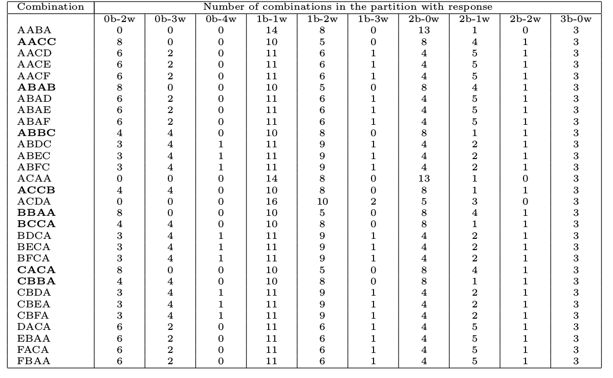

Oracle-type puzzles
how to solve them and what they can do for you
Oracle puzzles are a kind of games in which you navigate towards a solution through hints that are given by the other player; for instance, you need to find a combination of letters through playing another combination in the same alphabet, and getting in return the number of letters in the correct place, or also the number of correct letters that are misplaced. In this kind of games, minimizing the number of games needed to find the solution implies selecting the combinations so that they extract as much information as possible from the answer, or put in another way, they maximally reduce the amount of remaining combinations.
Mastermind is such a kind of game, and it's been solved through heuristics in a number of different ways. In this talk we will show the history of this kind of games, what are the keys to its solution, and how it can be extended to other, more general, kind of problems like the game of Hanabi.
On this day in 1801
Britain's first national census.
A census is an attempt to describe, in a series of questions, a whole population, but, in principle, if you know the answer to all the questions, can you identify a person? A census is an oracle or a black box that can reveal things about the population, and, if used wisely (for instance during elections) about the person itself.
Meet William Cauer
Fair use , Link
First person to create the term "black box" to describe a system, in his case an electrical network. Can you reconstruct the network given you know inputs and outputs? Also, he was a victim of the 20 questions game.
Getting responses from a black
box
Or Oracle, it does not really matter much now
Or asking Turing's oracle
They were able to solve NP-hard problems in a single step.
His true interest was on this black box
Which is the Enigma machine, and used all kind of cryptographic codes and techniques. One of the main ones was to feed false intelligence about places and times so that the "black box" result came out and could be analyzed.
Cribs == or known plaintext attack
At Bletchley Park in World War II, strenuous efforts were made to use messages with known plaintext. For example, when cribs were lacking, Bletchley Park would sometimes ask the Royal Air Force to "seed" a particular area in the North Sea with mines. The Enigma messages that were soon sent out would most likely contain the name of the area or the harbour threatened by the mines
Bulls and cows
fossilet - 4digits 0.4 screenshot, taken in Ubuntu 7.10, GPL , Link
Words or numbers in this game can't be repeated: they are called "isograms". There was a computer version already in 1968 at the university of Cambridge.
Mordecai Morowitz created Mastermind in 1971
Yep, same initials
He's been said to be "postmaster and cryptographer" or "telecommunications expert". As a matter of fact, the game is not so different from bulls and cows; only difference is the physical appearance and the fact that codes need not be isograms. He managed to convince a company in Leicester, Invicta Plastics, to commercialize it, after being not so successful in Israel. It would be nice to know the story. Apparently, according to this site it happened on 7th February of 1971 at the Nuremberg Toy Fair 49 years, 1 month and 1 day ago... Also, question. There's a computer scientist and a hairdresser in this picture. Who is who? Additionally, this is the headline of this article in Vice , that appeared yesterda, and that claims that Mastermind was 50 years yesterday (probably not true).
Similar to...
This is the "similar to" section of a patent that affects mastermind (a version of it). But also... my search of the history of Mordechai Meirowitz also is an example of black box search, since there are many variations on the name, and it can change all over.
Mordecai Mordechai Meirowitz Meirovich MeirovitzThis is a picture for sale in Amazon . Why such a thing exists, beats me.
Postmaster telecommunication engineer amateur mathematician Postal employee Phone technician
Vice literally has the last word on the subject.
Applications include
Communication reliability
Selective phenotyping
Code cracking
The first is a 2019 paper on channel clustering, the second is a 2011 paper on selective phenotyping, the third many papers by Goodrich, which calls it the mastermind attack.
Solving mastermind
We are of two minds
Without subtle ingenuity of mind, one
cannot make certain of the truth of their
reports.
Finding the hidden code
Easy problem: n*(k-1)
Build the next query
⇒ Mastermind satisfiability problem
Let's solve it anyway
As an optimization problem
Using evolutionary algorithms
Two sub-problems
MSP
Minimize draws/queries
→
→
... and so on
Combination: red,pink, lightblue, lightblue. The problem is to find every time at least one combination that meets all
criteria there. That's the MSP problem
Optimize distance to satisfiability
→
→ [ ] Happy birthday
Finding out my age is a game of trying to extract as much information as possible. You'll probably be able to find it in 2 or 3 questions, but because you are using "offline" information and you are also using pointed questions, that are able to extract a lot of information from the oracle. Same strategy is used for mastermind.
Testing for coronavirus: one test, two persons
One has met 1K persons and been all over
The one that gives you the optimum information
The one that has been in a crowded space
Second problem: designing optimal query
Using partitions of set of feasible queries.
Ingenuity of (master)mind


{kind=link}